Import a new Raster Image of the iron top view into the part file
Since the new raster image will come into the part file on the XC-YC plane, you will use the Dynamic WCS tool to reorient the XC-YC plane to coincide with a top view of the iron.
-
Drag XC-axis handle to the orientation shown below (–90°).
-
On the Visualize Shape toolbar, click Raster Image
 .
.
-
In the Plane Settings group, select the Lock Aspect Ratio
 check box, if necessary.
check box, if necessary.
Use the default values for Height and Length.
-
Click Specify TIFF Image and select the des07_idss_iron_topview.tif image file.
-
Click OK.
-
In the Actions group, click Create Raster Image.
-
Click OK.

The image needs to be repositioned.